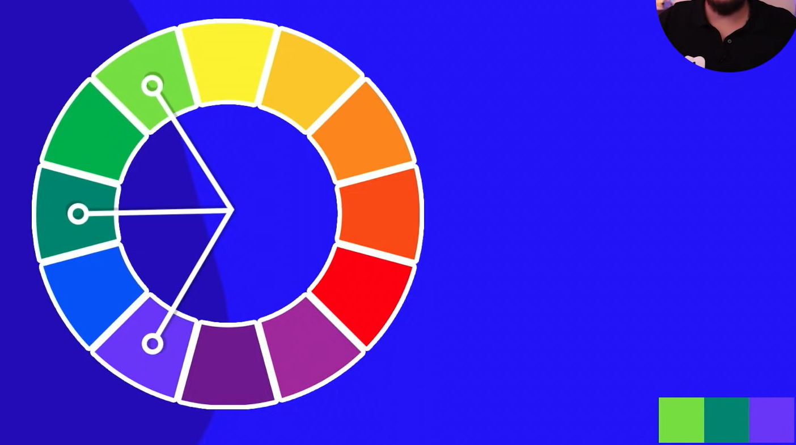

Amarelo
Vermelho
Azul
************************************************
Laranja
Violeta
Verde
***********************************************
As cores terciárias são uma mistura das cores primárias, com as cores secundárias. Sempre que for dar um nome a cor terciária, colocar nome duplo, sendo o primeiro nome a cor primária e o segundo nome a cor secundária.
Amarelo-esverdeado
Amarelo-alaranjado
Vermelho-alaranjado
Vermelho-arroxeado
Azul-arroxeado
Azul-esverdeado
Temperatura de cores

Ao fazer um site, deve-se usar a paleta de cores principal/primária, que é usada na logomarca do cliente, usando a partir desta 5 tons, usa-se paleta com 3, 4 (mais recomendado) e 5 cores
São cores que se constrastam hamoniosamente, veja o exemplo abaixo no círculo cromático:

São cores vizinhas, tem similaridade de cores, não tem contraste, mas tem harmonia, veja o exemplo abaixo no círculo cromático:

Usando cores similares com uma cor Complementar. Desse modo, o site fica com uma paleta de cores harmoniosa.
Segue o princípio: "pega" duas cores análogas, "pula" (pular tanto para direita quanto para esquerda) uma cor dessa paleta, e "pega" a terceira cor da paleta. Nesse caso, temos duas cores similares e uma outra cor não tão similar.
Essas cores possuem um contraste maior entre elas. Escolhe a cor primária, pula uma cor, esoclhe outra cor da mesma paleta veja a figura abaixo:
Nesse cenário, escolhemos a cor pincipal e pulamos astrês cores seguintes a ela, tanto na direita, quanto na esquerda, no mesmo sentido sempre.
Similar as cores triádicas, porém pula somente duas cores
Escolhe uma cor, pega a cor complementar a esta. Escolhe outra cor e também pega a cor completar a esta. Assim forma a paleta de cores tetrádicas, veja na figura abaixo.
Nesta forma de trabalhar com cores a Monocromia, usamos apenas uma cor do circulo monocromatico, e modificamos a sutauração e o brilho da referida cor, formando assim um Efeito Degradê.